CaCTüS Project 15 · independent piano evaluation
Piano Notes: beyond the pilot
On 39 independent Steinway recordings, unrestricted spectral-loss selection produced 21 one-octave errors. The predeclared soft prior produced 1; hard anchoring produced 1. YIN recovered 37/39 notes within 50 cents. Anchored learned decay lowered reconstruction loss on 37/39 recordings, with 4.27% mean per-recording relative reduction.
Across 12 assembled melodies containing 72 reference notes, pitch-plus-onset F1 was 0.604 for YIN and 0.604 for differentiable refinement. Requiring offset agreement as well gave 0.415 for refinement. These are controlled sequences assembled from real samples, not human performances.
Full research report · Reproduce · Preserved pilot · Frozen protocol
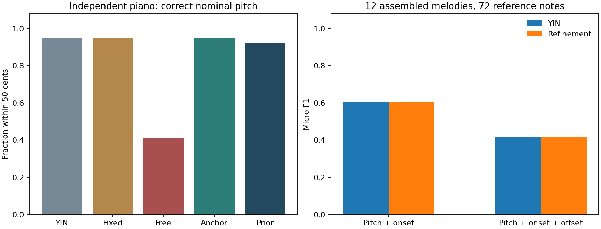
39 independent piano recordings
13 pitches × soft, medium and loud dynamics. Correct means within 50 cents of the nominal filename pitch.
Every recording · Dynamics and bootstrap intervals
12 assembled melody tests
Real sampled notes with constructed timing. These are not live human performances. Both estimators share an audio-derived onset/offset detector.
clip01
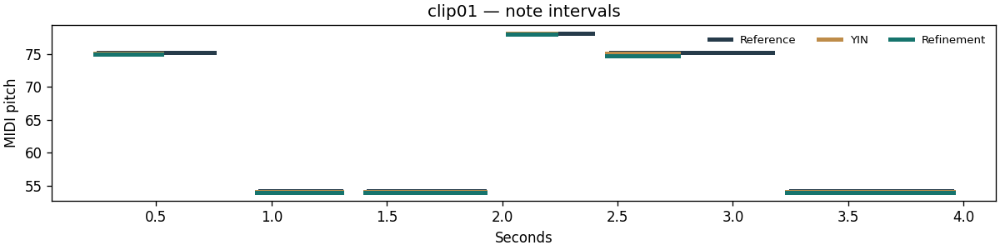
Reference MIDI · YIN MIDI · Refinement MIDI · All events and metrics
clip02
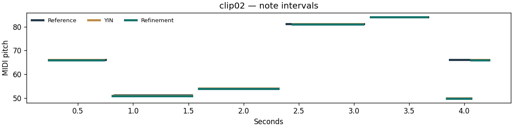
Reference MIDI · YIN MIDI · Refinement MIDI · All events and metrics
clip03
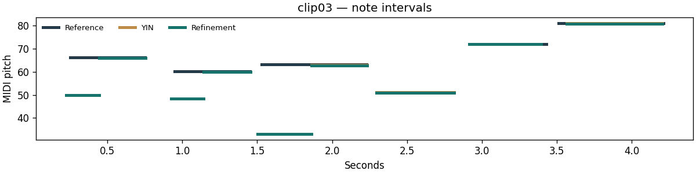
Reference MIDI · YIN MIDI · Refinement MIDI · All events and metrics
clip04
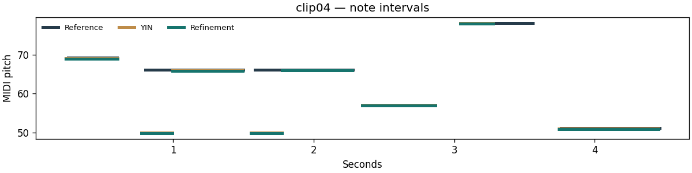
Reference MIDI · YIN MIDI · Refinement MIDI · All events and metrics
clip05
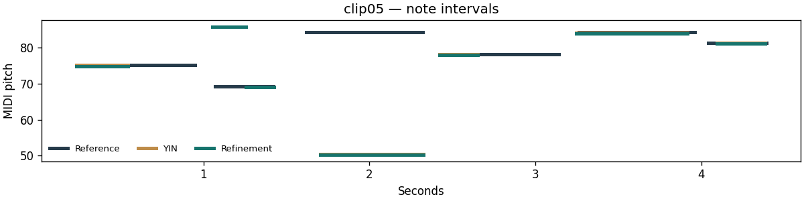
Reference MIDI · YIN MIDI · Refinement MIDI · All events and metrics
clip06
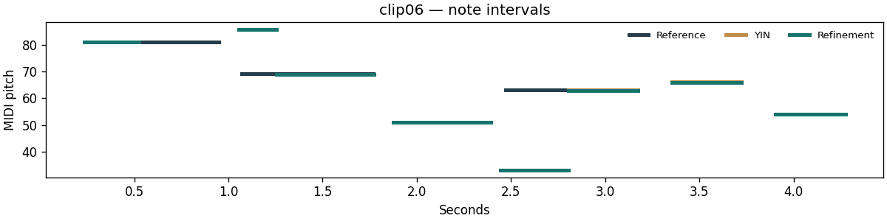
Reference MIDI · YIN MIDI · Refinement MIDI · All events and metrics
clip07
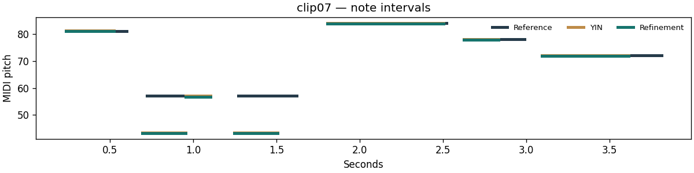
Reference MIDI · YIN MIDI · Refinement MIDI · All events and metrics
clip08
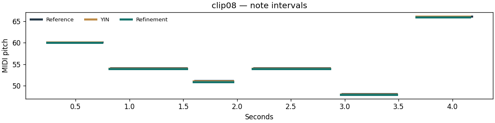
Reference MIDI · YIN MIDI · Refinement MIDI · All events and metrics
clip09
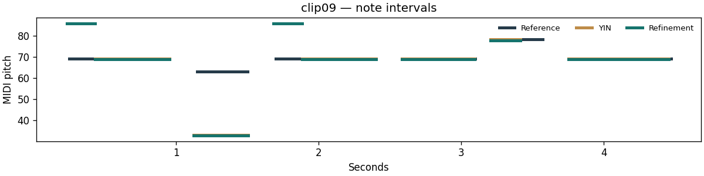
Reference MIDI · YIN MIDI · Refinement MIDI · All events and metrics
clip10
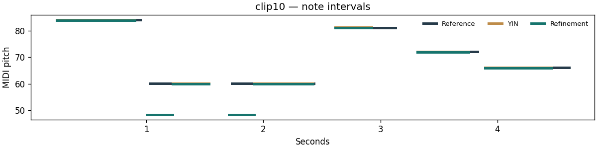
Reference MIDI · YIN MIDI · Refinement MIDI · All events and metrics
clip11
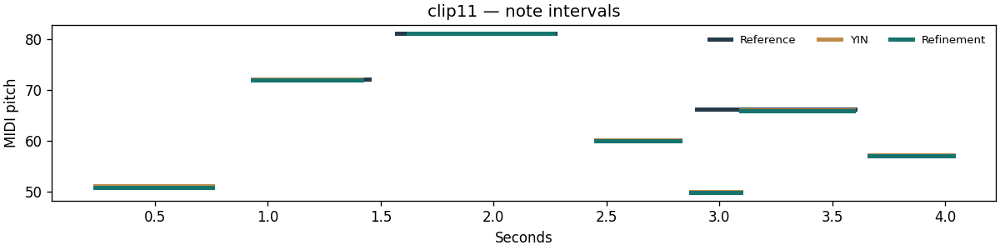
Reference MIDI · YIN MIDI · Refinement MIDI · All events and metrics
clip12
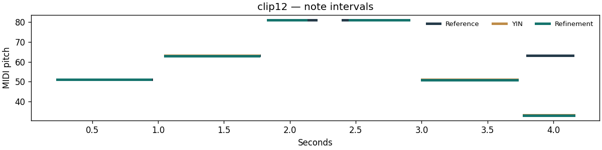
Reference MIDI · YIN MIDI · Refinement MIDI · All events and metrics
What this does not establish
Only two piano sample sets were examined, with the original Yamaha set used for development and a Steinway set reserved for evaluation. The 39 Steinway recordings cover 13 pitches × three dynamics; they are not 39 independent instruments. Per-note peak normalisation removes absolute loudness but retains timbral differences. Melodies reuse these evaluation recordings, so their results are a separate task, not an independent third dataset. Notes are intentionally separated, release tails are truncated with a fade, and no chords, pedal effects or expressive live-performance timing are modelled. Evaluation waveforms are fitted at inference; this is not a trained encoder generalising without adaptation. The spectral objective is both optimised and reported. No perceptual listening study, statistical superiority claim, or causal disentanglement claim is made.
Audio credit: Alexander Holm / Salamander (CC BY 3.0), and University of Iowa Electronic Music Studios / Lawrence Fritts (source use permission preserved). Substantial AI assistance was used. Review the source, reproduce the results and accurately describe your contribution before using this work in an application.